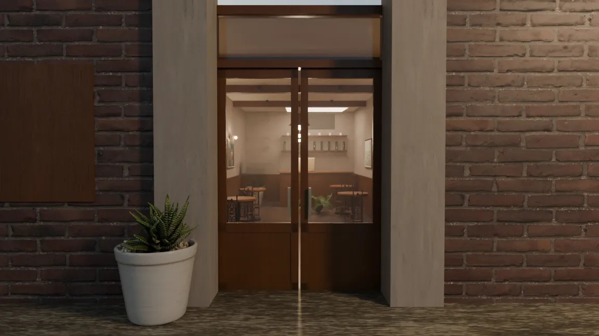
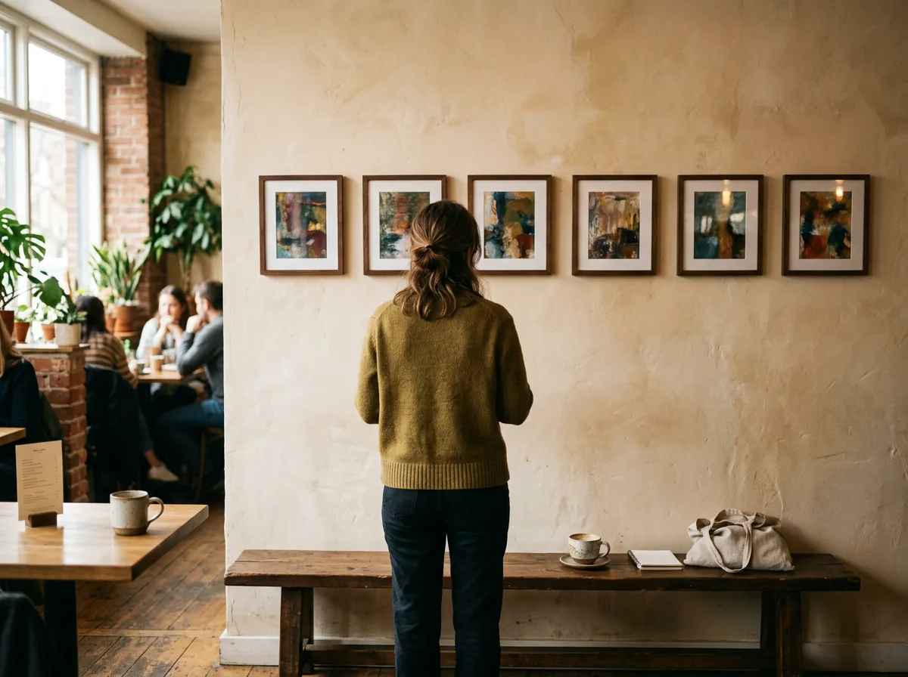
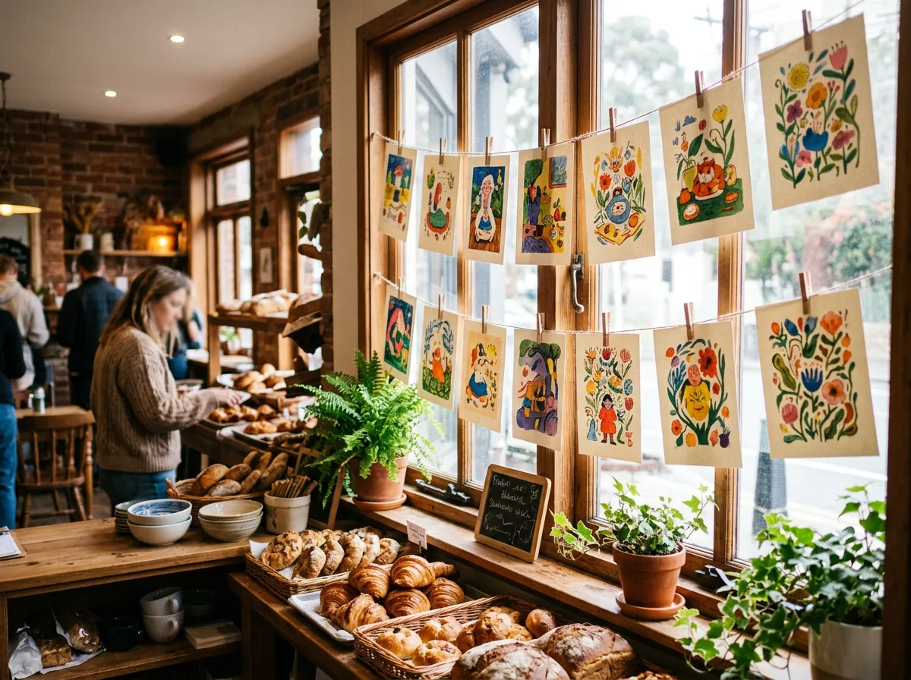
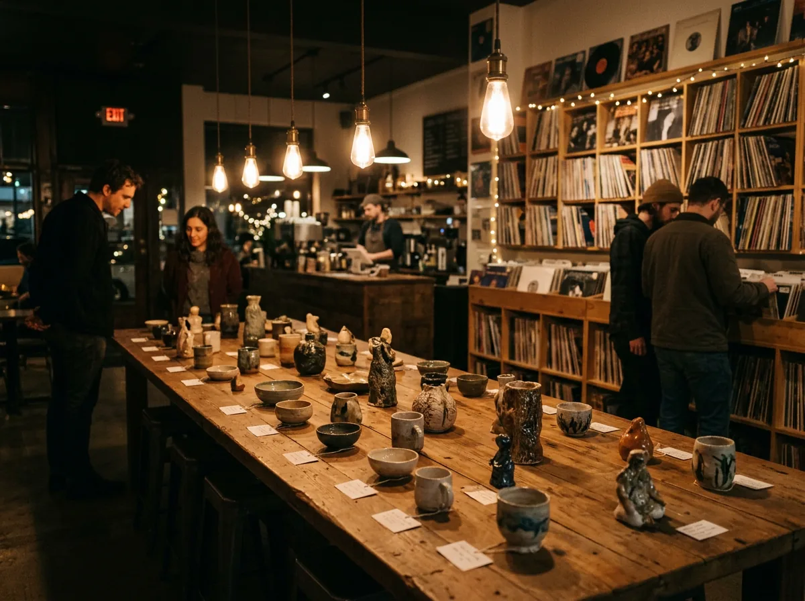
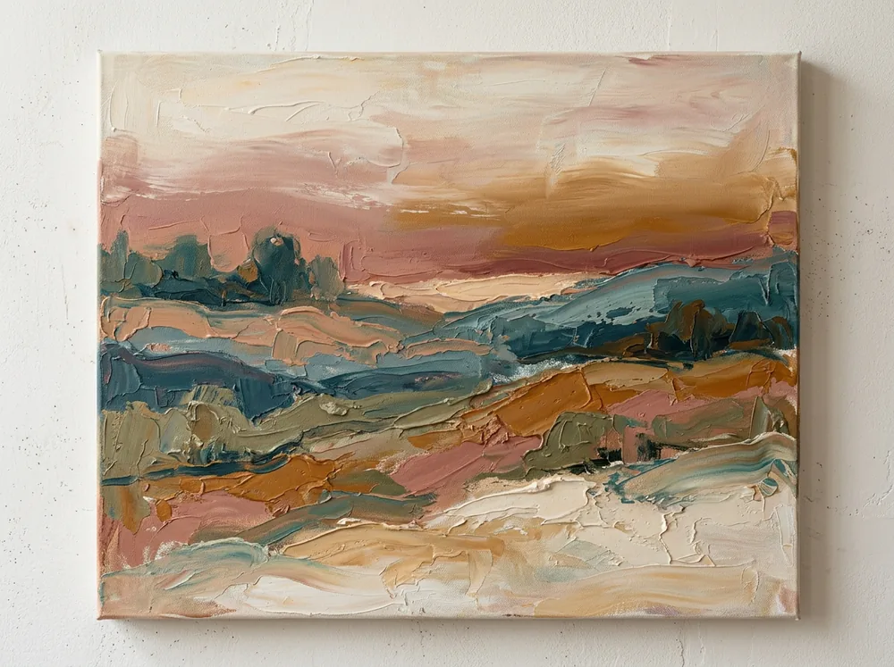
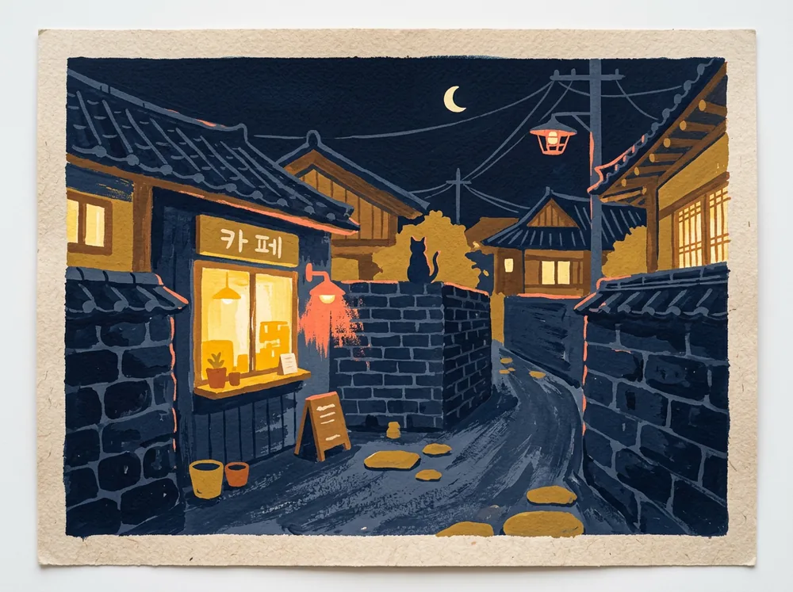
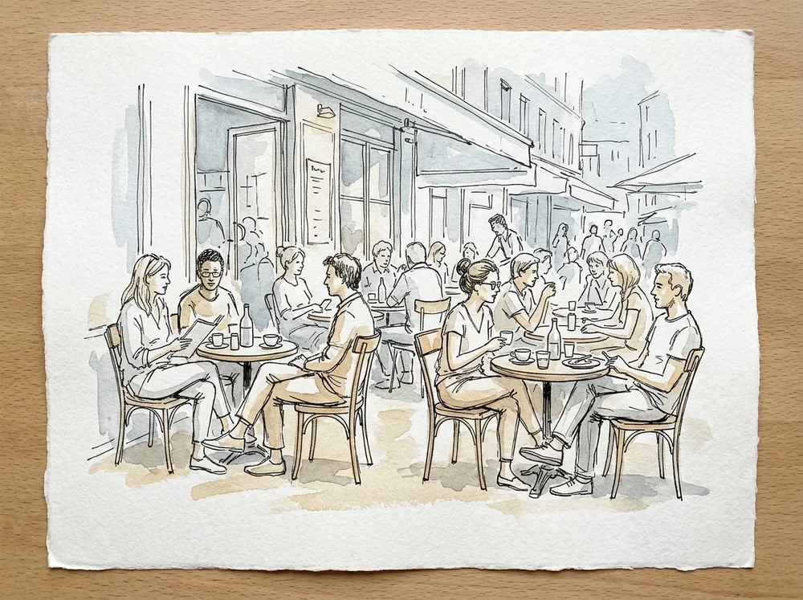
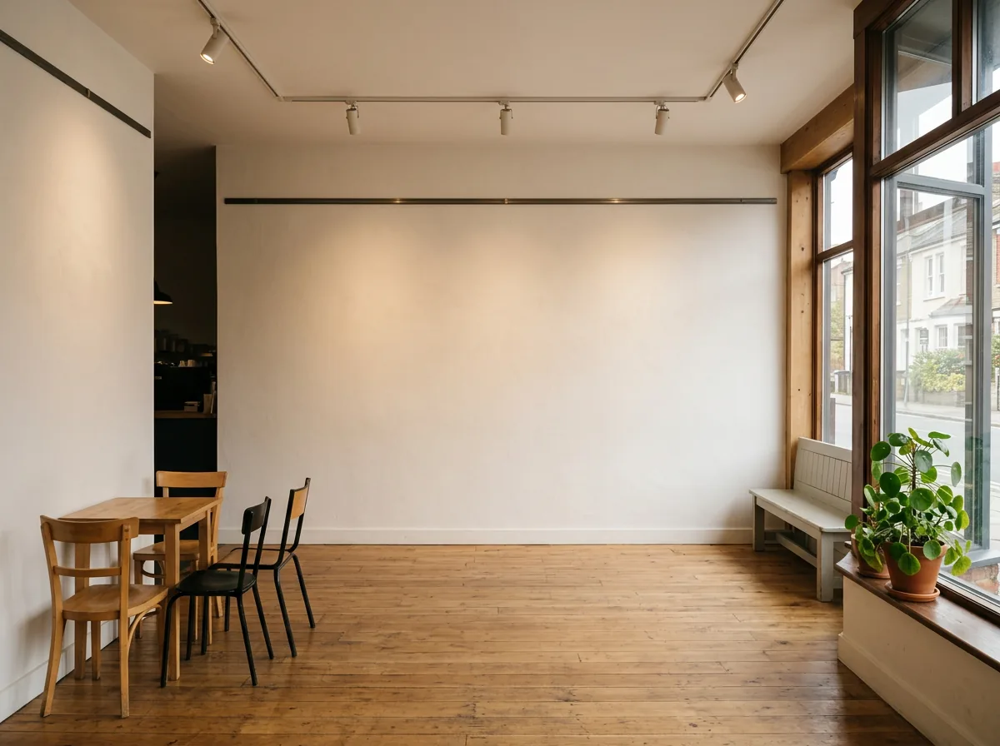
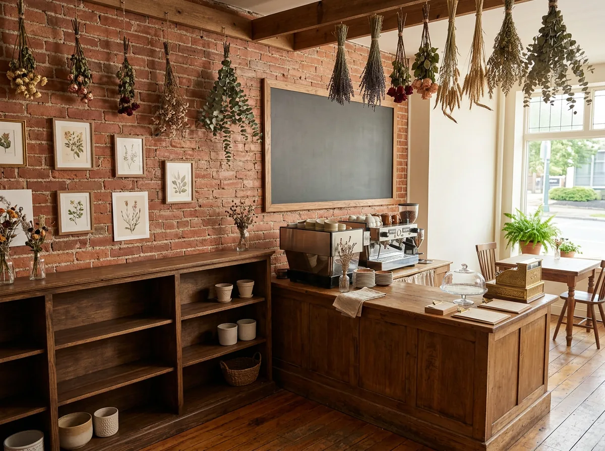

01 · 골목 끝퇴근길에 늘 지나던
작은 카페
작은 카페
02 · 문을 열면오늘은 조금
다른 불빛
다른 불빛
03 · 전시가 됩니다커피 한 잔 값으로 만나는
동네 작가의 그림
동네 작가의 그림
스크롤
드래그해서 둘러보기

아트한스푼은
큰 갤러리가 아니어도 전시는 열립니다. 동네 카페·서점·꽃집의 벽 한 면이면 충분해요. 작가는 작품을 걸 곳을, 공간은 손님이 머물 이유를 얻습니다. 아트한스푼이 조건을 맞추고 설치·QR 도슨트·홍보까지 함께합니다.
* 숫자는 시안용 예시입니다. 실제 수치로 교체합니다.
어떻게 진행되나요
작가는 작품 크기·수량·희망 지역·일정을, 공간은 벽 면적·설치 조건·운영 시간을 입력합니다.
지역·일정·설치 조건이 맞는 후보를 보여드립니다. 아직 후보가 없는 지역이면 입력한 조건 그대로 운영자에게 매칭을 요청할 수 있어요.
설치 일정 조율, 작품별 QR 도슨트 발급, 공개 페이지와 SNS 홍보 자료까지 함께 준비합니다.
전시 사례

손님 좌석 뒤 벽 한 면에 소품 6점. 전시 기간 주말 방문객이 늘었어요.

창가에 줄과 집게로 가볍게 설치. 못 자국 없이 끝나는 전시.

긴 테이블 하나로 열린 전시. 작품별 QR로 작가 설명과 구매 문의 연결.
* 사례 사진·문구는 시안용 예시입니다. 실제 전시 자료로 교체합니다.
작가

저녁 언덕의 색을 두꺼운 붓질로. 소품 위주, 설치 조건 자유.

동네 골목의 밤을 단순한 형태로. 창가·줄 설치에 적합.

카페 안 사람들의 선 드로잉. 작은 액자 10점 세트.
* 작가명·작품은 시안용 예시입니다.
공간

걸이 레일과 스팟 조명이 있어 액자 설치가 바로 가능한 공간.

소품·도자·드로잉처럼 작은 작품을 선반에 올리는 전시에 적합.
맞춤 제안 받기
베타 기간에는 등록된 공간·작가가 아직 많지 않습니다. 후보가 없어도 괜찮아요. 입력한 조건 그대로 운영자가 직접 찾아 연결해 드립니다.
* 데모에서는 등록 데이터 몇 건으로 추천을 흉내 냅니다. 실제 서비스에서는 Google·카카오 로그인 뒤 결과를 확인하고, 운영자 접수 화면으로 이어집니다.
QR 도슨트
전시 통합형 QR 하나와 작품별 QR을 함께 발급합니다. 작가가 직접 설명과 음성을 편집하고, 방문객은 앱 설치 없이 바로 봅니다. 기존에 쓰시던 QR 도구가 있다면 그대로 연결할 수 있는지 먼저 검토합니다.